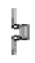
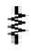
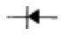
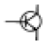
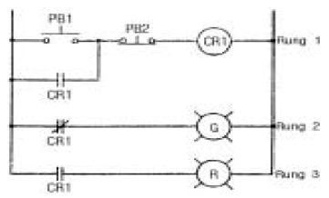
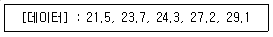

표면처리기능장 (2005-07-17 기출문제)
1과목: 임의 구분
1. 압축된 공기를 용융한 금속에 보내어 분무상으로 물체의 표면에 분사해서 금속의 피복층을 만들어 주는 방법은?
- Galvanzing
- Anodizing
- Parkerizing
- Metallizing
(정답률: 알수없음)

2. 철에 소량의 탄소(약 0.02∼2.11%)를 가한 Fe-C 합금을 탄소강이라 하는데 탄소강의 조직이 아닌 것은?
- 오스테나이트(Austenite)
- 페라이트(Frrite)
- 펄라이트(Pearlite)
- 알루마이트(Alumite)
(정답률: 알수없음)
3. 바렐 전기 도금시에 중요하지 않은 사항은?
- A/dm2
- R.P.M
- 도금액 수위
- 유성 연마재
(정답률: 알수없음)
4. 철강 소재의 전처리 작업으로써 산세할 때 그 표면이 수소에 의한 취약성이 나타나기 쉬운데 그 예방책으로 틀린 것은?
- 산세 시간을 빨리 짧은 시간에 실시한다.
- 염산을 사용할 때에는 상온에서 실시한다.
- 산세액 중에는 산화제가 들어가지 않도록 한다.
- 소재를 양극으로 전해 산세척을 한다.
(정답률: 알수없음)
5. 일반 탄소강(연강)의 부식의 주요인자를 설명한 것 중 틀린 것은?
- 용존산소 : 산소의 증가는 부식량을 촉진하나 산소 분압이 높아져 0.6 kgf/cm2이상이 되면 산소는 반대로 부식 억제효과를 나타낸다.
- 유속 : 유속은 Erosion 부식의 영향을 더욱 가속시키는 요소가 되어 부식을 증가시킨다. 특히 Turbulant flow가 되면 부식이 급증한다.
- 온도 : 산소의 확산에 의해서 부식속도가 지배될 경우 어떤 주어진 산소농도에서 온도가 증가함에 따라 부식 속도는 증가하다가 약 80℃ 이상의 온도에서는 산소의 용해도가 감소하게 되므로 계방계에서는 부식이 감소하게 된다.
- 염류 농도 : 많아질수록 틈새 부식, 공식(Pitting) 및 응력부식을 가속시킨다.
(정답률: 알수없음)
6. 전리도의 설명으로 틀린 것은?
- 전리도는 물질의 종류에 따라 일정한 값을 유지한다.
- 전리도는 온도가 높을수록 커진다.
- 전리도는 농도가 작을수록 커진다.
- 1/10N 용액의 전리도(18℃)에서 붕산은 아세트산 보다 전리도가 크다.
(정답률: 알수없음)
7. 크롬도금의 음극에서 일어나는 전극반응은?
- 수소가스 발생
- 산소가스 발생
- 양극금속의 산화
- 3가크롬을 6가크롬으로 산화
(정답률: 알수없음)
8. 자동도금 장치에서 행거를 운반단위로 할 때 구비해야 할 조건 중 틀린 것은?
- 완충장치를 붙이는 것이 바람직 할 것
- 전기접촉이 양호하고 발열이 없을 것
- 무거워야 하며 인장강도가 있을 것
- 경량이고 기계적 강도가 충분할 것
(정답률: 알수없음)
9. 알칼리 탈지에서 규산염의 함량이 과다하여 충분한 수세가 되지 않았을 경우 도금에 어떤 영향을 미치는가?
- 탈지가 잘되어 도금의 밀착성이 향상된다.
- 도금의 밀착 불량이 된다.
- 소지를 부식시킨다.
- 광택이 좋아진다.
(정답률: 알수없음)
10. 버프 연마작업에 있어서의 안전수칙 중 맞는 것은?
- 작업할 때 머리에 수건등을 감고서 한다.
- 벨트식 연마기의 동력 전달용 평 벨트의 레이싱 핀은 벨트의 폭 보다 더 많이 밖으로 나와 있어야 한다.
- 버프 연마기의 고정은 축에 진동이 없도록 수직으로 장치한다.
- 버프 연마기에는 반드시 안전커버를 해야 하고 집진설비를 부착해야 한다.
(정답률: 알수없음)
11. 도금면에 구름이 낀 것처럼 맑지 않고 뿌옇게 나타나는 상태가 발생하는 원인으로 틀린 것은?
- 광택제의 부족이나 과잉
- 적당한 탈지
- pH 부적당
- 도금액 온도 부적당
(정답률: 알수없음)
12. 하중물을 매달아 올리거나 가로들기에 이용되며, 공장내의 천정공간에 I형강의 레일을 부설하고 이것을 따라 장비를 주행시켜 물건을 이동시키는 운반기계는?
- 호이스트
- 벨트 컨베이어
- 트롤리 컨베이어
- 체인 블록
(정답률: 알수없음)
13. 도금 작업 후 실시하는 건조방법의 종류 중 관계가 없는 것은?
- 열탕 침적법
- 증기 건조법
- 자외선 건조법
- 가스 건조법
(정답률: 알수없음)
14. 용융알루미늄 도금에서 알루미늄의 융점의 온도는?
- 330℃
- 420℃
- 240℃
- 660℃
(정답률: 알수없음)
15. 파라데이(Faraday)법칙의 설명으로 틀린 것은?
- 전해질 수용액 중에서 전극에 석출되는 물질의 양은 통과한 전기량에 비례한다.
- 1F은 6.023x1023의 Avogadro 수의 전자를 가진 전기량을 말한다.
- 전해질 수용액 중에서 전극에 석출하는 물질의 양은 이물질의 원자량에 비례한다.
- 1 coulomb은 1A의 전류를 1초 동안 통과시킨 전기량이며 1화학 당량을 석출시키는데 필요한 전기량은 1F이다.
(정답률: 알수없음)
16. 다음 물질의 수용액을 백금전극을 사용하여 같은 전기량으로 전기분해할 때 가장 많이 석출 되는 금속은?
- CuSO4(Cu = 64)
- NiSO4(Ni = 59)
- AgNO3(Ag = 108)
- Pb(NO3)2(pb = 207)
(정답률: 알수없음)
17. 무전해 도금에 사용되는 환원제가 아닌 것은?
- HCHO
- NaH2PO2·2H2O
- DMAB
- 구연산나트륨
(정답률: 알수없음)
18. Sulfur meter와 관련이 가장 적은 것은?
- 크롬 도금
- 다공성 시험
- 황산
- 특정 성분 분석
(정답률: 알수없음)
19. 사이클링을 일으키는 제어방식은?
- 미분제어
- 적분제어
- 연속제어
- ON - OFF 제어
(정답률: 알수없음)
20. 도금공장에서 생기는 재해로 틀린 것은?
- 약품에 의한 피부상해
- 약품, 해로운 가스 및 분무에 의한 중독과 상해
- 버프연마 등에 있어서의 기계적 상해
- 밀링 작업에 의한 기계적 상해
(정답률: 알수없음)
2과목: 임의 구분
21. 페록실 시험에 대한 사항 중 틀린 것은?
- 철강소지상의 니켈크롬도금의 핀홀(pin hole)의 조사에 적용된다.
- 페로시안화칼륨이나 페리시안화칼륨이 철과 반응하여 청색으로 발색된다.
- 철소지상의 아연도금에도 적용된다.
- 반응은 페로시안화철, 페리시안화철로 된다.
(정답률: 알수없음)
22. 전기도금시 금속의 균일한 석출을 양호하게 하기 위하여 유의하여야 할 사항 중 틀린 것은?
- 양극과 물건과의 각 부분의 거리를 같게 한다.
- 양극과 물건의 거리를 가깝게 한다.
- 보조양극 및 보조음극을 사용한다.
- 도금액의 조성 및 조건을 잘 검토하여 작업을 한다.
(정답률: 알수없음)
23. 비금속 재료로서 금속에서 얻을 수 없는 특성을 활용하기 위해 개발된 신소재가 아닌 것은?
- 에폭시(Epoxy)
- 복합재료(Composite)
- 세라믹 재료(Ceramic)
- 초전도 재료(Super Conductor)
(정답률: 알수없음)
24. 리미트 스위치의 심벌은?




(정답률: 알수없음)
25. 도금설비 자동화를 억제하는 요소로 틀린 것은?
- 생산계절의 변동
- 수주의 장래예상의 불안정
- 생산의 증강
- 공장면적 기타의 제약
(정답률: 알수없음)
26. 다음 독극물에 대한 응급조치로 토하게 하는 방법 중 틀린 것은?
- 식염 16g을 녹인 온탕을 복용한다.
- 겨자분 한스푼을 용해한 물을 한컵가득 마신다.
- 비눗물을 마시게 한다.
- 수산화 나트륨 100 배로 희석하여 마시게 한다.
(정답률: 알수없음)
27. 기상도금에서 사용되는 금속의 특징으로서 틀린 것은?
- 화합물은 용이하게 생성될 것
- 고온에서 쉽게 분해될 것
- 휘발성이 있을 것
- 융점이 높을 것
(정답률: 알수없음)
28. 어떤 장치의 사다리식 논리그림(ladder diagram)의 설명 중 틀린 것은?

- PB1을 눌렀을 때 R lamp 가 들어온다.
- PB1을 눌렀을 때 CR1 에 전압이 가해진다.
- PB2을 눌렀을 때 G lamp 가 들어온다.
- PB1을 눌렀을 때 평시 폐쇄 접점은 개방된다.
(정답률: 알수없음)
29. 금속 이온 용액에 어떤 금속편을 담갔을 때 금속 이온 용액과 금속편과의 전위차가 생긴다. 이때 생기는 전위의 부호가 나머지 셋과 다른 것은?
- Li
- Na
- Ni
- Cu
(정답률: 알수없음)
30. 크롬도금은 어떤 산에 잘 부식되는가?
- 질산(HNO3)
- 염산(HCl)
- 초산(CH3COOH)
- 황산(H2SO4)
(정답률: 알수없음)
31. F- 을 함유한 Cr 도금액의 장점이 아닌 것은?
- 광택범위가 넓고 피복력이 크다.
- 음극 전착 효율이 높다.
- 크롬상에 크롬도금을 하기가 쉽다.
- 액의 노화가 늦다.
(정답률: 알수없음)
32. Austenite계 스테인리스(SUS304, 18-8스테인레스)에서 18과 8은 무엇을 나타내는가?
- Cr-Ni
- Ni-Cr
- Cr-Fe
- Fe-Cr
(정답률: 알수없음)
33. 박판의 연속소둔설비, 연속도금설비 등에서 전후 코일을 용접하거나 중앙부의 속도(Speed)를 일정하게 유지하기 위해 판을 자동으로 저장하는 역할을 하는 설비는?
- Pay-Off Reel
- Looper
- Tension Reel
- Scraper
(정답률: 알수없음)
34. 전해탈지를 하려고 할 때 양극 전해탈지에서 주의하지 않아도 관계가 없는 것은?
- 전압
- 부식
- 온도
- 수소취성
(정답률: 알수없음)
35. 황산구리 광택 도금액에서 다음의 사항 중 옳다고 생각되는 것은 무엇인가?
- 양극은 고순도 전기동을 사용한다.
- 공기 교반은 적을수록 좋다.
- 여과는 될 수 있는 한 피하는 것이 좋다.
- 염소분이 미량(0.008% ~ 0.015%) 있어야 한다.
(정답률: 알수없음)
36. 대전 입자를 분류할 때, 반도체의 정공(positive hole)은?
- 전자 도전체
- 이온 도전체
- 전자가 빠져나간 자리
- 이온으로 해리하는 모양
(정답률: 알수없음)
37. Ni 도금액에서 H3BO3(붕산)의 역할이 아닌 것은?
- 도금면의 광택범위 확대
- 도금의 응력제거
- 양극의 용해도 증진
- pH의 변화를 억제시키는 완충제
(정답률: 알수없음)
38. 기어펌프에 대한 설명 중 틀린 것은?
- 구조가 간단하고 값이 싸다.
- 외접기어 펌프에서 베어링의 하중을 적게 하려면 기어이의 폭을 넓게 한다.
- 외접기어 펌프에서 이의 수가 적으면 토출압력에 맥동이 생긴다.
- 동일 토출량에서는 내접기어 펌프가 외접기어 펌프보다 대형이고, 소음도 크다.
(정답률: 알수없음)
39. 다음 중 분산강화합금의 특징으로 틀린 것은?
- 항복응력의 증가
- 항복후 가공경화 감소
- 고온강도 증가
- 크리프 특성 향상
(정답률: 알수없음)
40. 금속 용사법 금속의 재질과 용융 열원에 따른 분류를 할 수 있다. 용융 열원의 분류에 해당하는 것은?
- 분말식
- 용탕식
- 선식
- 전기식
(정답률: 알수없음)
3과목: 임의 구분
41. 양극산화법으로 알루미늄판을 양극으로 하고 황산 수용액중에서 전기분해하여 양극 산화 시키는 목적은?
- 알루미늄 표면에 용해되어 깨끗하게 된다.
- 알루미늄 표면에 적갈색의 착색을 한다.
- 알루미늄 표면에 산소가 발생되어 그 표면을 깨끗하게 한다.
- 알루미늄 표면에 두꺼운 산화막을 형성시켜 내식성을 좋게 한다.
(정답률: 알수없음)
42. 알루미늄 및 알루미늄 합금의 전처리로 틀린 것은?
- 알카리탈지
- 산세
- 징케이트처리
- 우드니켈 스트라이크 도금
(정답률: 알수없음)
43. 좋은 품질의 도금 제품을 생산하기 위해 도금액을 항상 표준 상태로 유지하기 위해서는 액을 관리한다. 헬셀 테스트 기록의 부호가 틀린 것은?
- 광택 :

- 반광택 :

- 갈라짐 :

- 부풀음 :

(정답률: 알수없음)
44. 건식도금( 乾式鍍金 )에 대한 설명으로 맞는 것은?
- 이온도금은 증발되는 가스가 많아 도금속도는 크나 밀착강도가 적고 뒷면 등은 도금되지 않는다.
- 진공증착은 막이 치밀하고 밀착도 좋지만 도금속도가 느리다.
- 음극스파터링은 도금속도도 크고 밀착도 좋으며 뒷면에도 도금이 된다.
- 화학적 기상도금은 우수한 밀착성이 얻어지나 처리중 모재의 변형, 변질을 가져온다.
(정답률: 알수없음)
45. 무전해 도금에 대한 설명 중 틀린 것은?
- 다른 금속간에 전위차를 이용하는 방법으로 치환도금법이 있다.
- 환원제를 이용하는 방법으로 자기촉매도금법이 있다.
- 어떠한 두께로도 도금이 가능하다.
- 유리, 세라믹 등 비금속도금은 선택적으로 실시한다.
(정답률: 알수없음)
46. 철강 표면에 크롬을 확산 침투시키는 도금방법은?
- 크로마이징
- 갈바나이징
- 실리콘라이징
- 칼로라이징
(정답률: 알수없음)
47. 전기분해를 하면 전극 부근의 전해질 농도가 변화하기 때문에, 전극 전위는 처음 값보다 음극은 낮게, 양극은 높게되어 가해진 전압에 대항하여 전류를 저하시키는 현상은?
- 화학분극
- 저항분극
- 농도분극
- 손실분극
(정답률: 알수없음)
48. 시안화 구리 도금의 결함 중 레벨링(Levelling) 부족 현상에 대한 설명 중 틀린 것은?
- 광택제 부족
- 도금두께 부족
- 소재무게 오차
- 전원교체 불량
(정답률: 알수없음)
49. 크롬도금에서 3가 크롬의 양을 3g/ℓ 생성시켜야 한다. 3가 크롬을 만들어 주는 방법 중 틀린 것은?
- 강전해에 의하여 산화하는 방법
- 주석산을 첨가해서 환원시키는 방법
- 3가 크롬 자체를 첨가하는 방법
- 약전해에 의해서 환원하는 방법
(정답률: 알수없음)
50. 시안화구리 도금액 중 폐하 pH 조절에 사용되는 약품은?
- 롯셀염
- 시안화 나트륨
- 계면 활성제
- 수산화 칼륨
(정답률: 알수없음)
51. 안전에 대한 취급 책임자가 아닌 것은?
- 전기취급 취급자
- 보안위원
- 화기취급 책임자
- 안전위원
(정답률: 알수없음)
52. 니켈 전기 도금액에서 염화니켈의 작용으로 틀린 것은?
- 양극의 용해를 좋게 한다.
- pH의 변동을 완화하는 역할을 한다.
- 니켈이온의 보급원이 된다.
- 욕의 전도성을 좋게 한다.
(정답률: 알수없음)
53. 시안화구리 도금 용액을 조제할 때 꼭 지켜야 할 순서는?
- 제일 먼저 수산화나트륨을 용해한다.
- 시안화구리를 용해한 다음 시안화나트륨을 조금씩 첨가한다.
- 시안화나트륨을 녹인 후 시안화구리 반죽한 것을 조금씩 첨가한다.
- 첨가제를 넣지 않은 후 소정량의 약품을 함께 투입한다.
(정답률: 알수없음)
54. 시안화구리도금에 대한 사항 중 틀린 것은?
- 철소지상에 시안화구리 스트라이크를 할 경우 욕중의 유리 시안화나트륨의 감소는 도금 밀착 불량의 원인이 된다.
- 시안화구리액의 구리는 1가 구리이다.
- 시안화구리도금에서 탄산나트륨은 5-20g/ℓ정도 함유한 것이 좋다.
- 일반적으로 시안화구리도금액에서 시안화구리가 부족하고 유리 시안이 많으면 도금 석출 속도는 빨라진다.
(정답률: 알수없음)
55. 여력을 나타내는 식으로 가장 올바른 것은?
- 여력 = 1일 실동시간 × 1개월 실동시간 × 가동대수
- 여력 = (능력-부하) (f) 1/100
- 여력 = 능력 - 부하/능력 ⒡ 100
- 여력 = 능력 - 부하/부하 ⒡ 100
(정답률: 알수없음)
56. 다음 데이터로부터 통계량을 계산한 것 중 틀린 것은?

- 중앙값(Me) = 24.3
- 제곱합(S) = 7.59
- 시료분산(s2) = 8.988
- 범위(R) = 7.6
(정답률: 알수없음)
57. 다음 중 로트별 검사에 대한 AQL 지표형 샘플링검사 방식은 어느 것인가?
- KS A ISO 2859-0
- KS A ISO 2859-1
- KS A ISO 2859-2
- KS A ISO 2859-3
(정답률: 알수없음)
58. 다음 중 계량치 관리도는 어느 것인가?
- R 관리도
- nP 관리도
- C 관리도
- U 관리도
(정답률: 알수없음)
59. 다음 중에서 작업자에 대한 심리적 영향을 가장 많이 주는 작업측정의 기법은?
- PTS법
- 워크 샘플링법
- WF법
- 스톱 워치법
(정답률: 알수없음)
60. 생산보전(PM:Productive Maintenance)의 내용에 속하지 않는 것은?
- 사후보전
- 안전보전
- 예방보전
- 개량보전
(정답률: 알수없음)